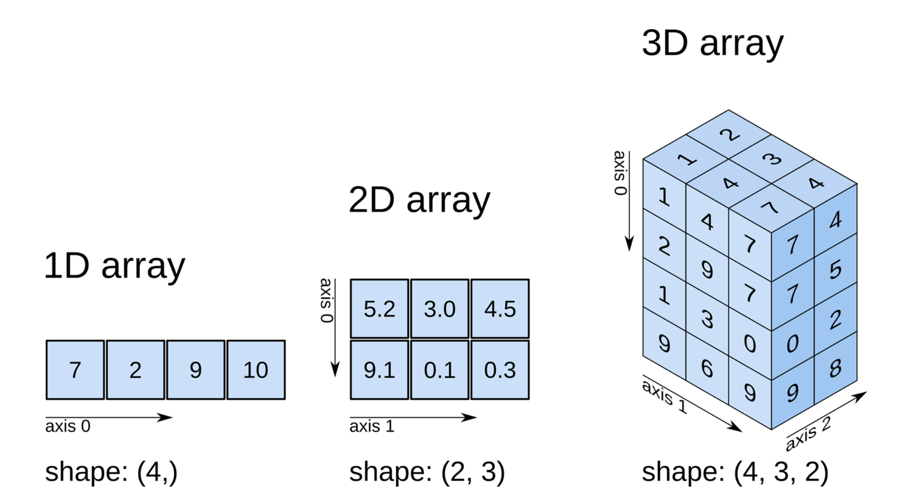
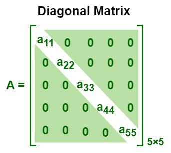

Tableaux NumPy (ndarray)
Tel que mentioné à la section précédente, NumPy est la bibliothèque phare pour le calcul numérique en Python. Son objet central, le ndarray, permet de stocker et de manipuler efficacement des tableaux multidimensionnels. Dans cette section, nous allons passer en revue la création et l'utilisation avancée des tableaux NumPy.
Création de Tableaux NumPy
Les fonctions array et asarray
np.array(): Crée un nouvel objetndarrayà partir d'une liste, d'un tuple ou d'un autrendarray.np.asarray(): Si l'objet d'entrée est déjà unndarray, renvoie l'objet tel quel. Sinon, crée une copie comme le feraitnp.array(). Ceci est utile pour convertir un paramètre d'une fonction en tableau NumPy sans copie inutile.
# Liste Python
lst = [1, 2, 3, 4]
# Création d'un ndarray
arr1 = np.array(lst)
print("arr1:", arr1)
# Conversion en ndarray (sans copie puisque arr1 est déjà un ndarray)
arr2 = np.asarray(arr1)
print(arr2 is arr1) # True
# Conversion en ndarray (avec copie)
arr3 = np.asarray(lst)
print(arr3 is arr1) # False
La fonction copy
Par défaut, la fonction np.array() crée une copie du tableau source. Un autre
méthode pour réaliser explicitement une copie d'un ndarray est la méthode
copy() :
Dimensions et Forme (shape)
Les tableaux NumPy peuvent avoir plusieurs dimensions. Un tableau à une dimension est similaire à une liste Python, tandis qu'un tableau à deux dimensions est similaire à une matrice. On peut aussi voir les tableaux à deux dimensions comme des tableaux de tableaux. Dans le cadre de ce cours, nous nous concentrerons principalement sur les tableaux à une et deux dimensions.

Source : O'Reilly
Les fonctions ndim et shape
ndim: Renvoie le nombre de dimensions du tableau.-
shape: Renvoie un tuple indiquant la taille de chaque dimension. Ce tuple contient autant d'éléments qu'il y a de dimensions, et chaque valeur spécifie le nombre d'éléments dans cette dimension.- Par exemple, un tableau de forme
(3, 4)aura 3 lignes et 4 colonnes (soit 12 éléments au total). - Plusieurs fonctions acceptent la forme du tableau comme argument. C'est notamment le cas des fonctions de création de tableaux spécialisés que nous verrons à la prochaine section.
- Le nombre d'éléments dans un tableau est égal au produit des éléments de la forme.
- Par exemple, un tableau de forme
arr = np.array([[1, 2, 3], [4, 5, 6]])
# [[1 2 3]
# [4 5 6]]
print("Nombre de dimensions :", arr.ndim) # 2
print("Forme du tableau :", arr.shape) # (2, 3)
La fonction reshape
- Permet de donner une nouvelle forme à un tableau, sans modifier ses données.
- Lorsque l'on appelle
reshape((2, 4)), on redéfinit la forme pour avoir 2 lignes et 4 colonnes. - Le nombre d'éléments doit rester le même après le redimensionnement.
arr = np.arange(8) # [0, 1, 2, 3, 4, 5, 6, 7]
print("Forme initiale :", arr.shape) # (8,)
arr_reshaped = arr.reshape((2, 4))
# [[0 1 2 3]
# [4 5 6 7]]
print("Nouvelle forme :", arr_reshaped.shape) # (2, 4)
print(arr_reshaped)
La fonction flatten
flatten() Retourne une copie du tableau écrasé en une dimension. Par exemple,
si on voit un tableau bidiemensionnel comme un tableau de tableaux, flatten()
va concaténer tous les tableaux internes en un seul tableau.
arr_2d = np.array([[1, 2], [3, 4]])
flattened = arr_2d.flatten()
print("flattened:", flattened) # [1 2 3 4]
Création de tableaux spécialisés
NumPy offre plusieurs fonctions pour créer des tableaux de formes et de valeurs spécifiques. Plusieurs de ces fonctions acceptent la forme du tableau comme argument optionnel.
np.arange()
Crée un tableau d'éléments équidistants (similaire à range en Python).
Le premier argument est le début de l'intervalle, le deuxième est la fin (non
inclus) et le troisième est le pas.
np.linspace()
Crée un tableau en divisant un intervalle en un nombre de points spécifié. Le premier argument est le début de l'intervalle, le deuxième est la fin et le troisième est le nombre de points. Cette fois-ci la fin de l'intervalle est incluse.
tab_linspace = np.linspace(0, 1, 5) # [0. , 0.25, 0.5 , 0.75, 1. ]
print("Tableau linspace :", tab_linspace)
np.zeros()
Crée un tableau de zéros.
np.diag()
Crée une matrice diagonale à partir d'une liste ou extrait la diagonale d'une matrice existante.
mat_diag = np.diag([1, 2, 3])
# [[1 0 0]
# [0 2 0]
# [0 0 3]]
print("Matrice diagonale :\n", mat_diag)

Source : Geeks for geeks
np.eye()
Crée une matrice identité. C'est à dire une matrice diagonale avec des 1.
np.random.random()
Génère un tableau avec des valeurs aléatoires comprises entre 0 et 1.
np.random.randn()
Génère un tableau avec des valeurs aléatoires suivant une distribution normale.
np.random.randint()
Génère un tableau avec des valeurs entières aléatoires dans un intervalle donné. Le premier argument est la borne inférieure, le deuxième la borne supérieure et le troisième la forme du tableau. Les bornes sont incluses.
arr_randint = np.random.randint(1, 10, (2, 2))
print("Tableau aléatoire (entiers) :\n", arr_randint)
np.random.choice()
Génère un tableau avec des valeurs aléatoires tirées d'un tableau existant. Le premier argument est le tableau de valeurs possibles et le deuxième est le nombre d'éléments à tirer.
arr_choice = np.random.choice(["Pomme", "Poire", "Banane", "Orange"], 2)
print("Tableau de choix aléatoires :", arr_choice)
Opérations sur les Tableaux
Opérations vectorielles
Les opérations arithmétiques appliquées à un ndarray sont vectorisées : elles
s'appliquent à chaque élément du tableau.
arr = np.array([1, 2, 3])
print(arr + 10) # [11 12 13]
print(arr * 2) # [2 4 6]
print(arr ** 2) # [1 4 9]
Produit matriciel
Le produit matriciel (linéaire) peut se faire de plusieurs façons :
- Opérateur
@(Python 3.5+) - Fonction
np.dot() - Méthode
dot()dundarray
mat1 = np.array([[1, 2], [3, 4]])
mat2 = np.array([[5, 6], [7, 8]])
# Utilisation de l'opérateur @
res1 = mat1 @ mat2
# Utilisation de np.dot()
res2 = np.dot(mat1, mat2)
# Utilisation de la méthode dot
res3 = mat1.dot(mat2)
print("Produit matriciel (res1) :\n", res1)
Matrice transposée
La transposition d'un tableau (inversion des axes) se fait via l'attribut T ou
la fonction np.transpose(). Cela permet de transformer les lignes en colonnes
et vice-versa.
Autres manipulations
stack,concatenate, etc. (au-delà du cadre du cours, mais disponibles si vous en avez besoin).
Indexation et tranches
Tout comme les listes Python, les tableaux NumPy supportent l'indexation et les tranches. Cependant, NumPy offre des fonctionnalités supplémentaires pour l'indexation avancée et l'indexation booléenne.
Indexation de base
L'indexation d'un ndarray fonctionne de manière similaire à celle des listes Python.
Pour les tableaux bidiemensionnels, l'indexation se fait par rangées et colonnes :
arr_2d = np.array([[1, 2, 3], [4, 5, 6]])
print(arr_2d[0, 1]) # élément en (rangée 0, colonne 1) : 2
Tranches (Slices)
Les tranches permettent de sélectionner des sous-parties d'un tableau.
Syntaxe générale : arr[start:stop:step]
Pour les tableaux bidimensionnels, on peut utiliser des tranches sur chaque axe :
arr_2d = np.array([[1, 2, 3], [4, 5, 6], [7, 8, 9]])
sub_2d = arr_2d[0:2, 1:3] # sous-tableau des deux premières rangées, colonnes 1 à 2
# [[2 3]
# [5 6]]
print(sub_2d)
Indexation booléenne
L'indexation booléenne permet de sélectionner des éléments d'un tableau en utilisant un tableau de booléens de la même forme. Chaque élément du tableau booléen indique si l'élément correspondant du tableau d'origine doit être inclus dans le résultat.
arr = np.array([1, 2, 3, 4, 5, 6])
mask = (arr % 2 == 0) # True pour les éléments pairs
print(mask) # [False True False True False True]
arr_even = arr[mask]
print("Nombres pairs :", arr_even) # [2 4 6]
Dans cet exemple, mask est un tableau de booléens où chaque élément est True
si l'élément correspondant dans arr est pair, et False sinon. En utilisant
arr[mask], nous obtenons un nouveau tableau contenant uniquement les éléments
pairs de arr.
Indexation booléenne avec des tableaux multidimensionnels
L'indexation booléenne fonctionne également avec des tableaux multidimensionnels.
arr_2d = np.array([[1, 2, 3], [4, 5, 6], [7, 8, 9]])
mask_2d = (arr_2d > 4)
print(mask_2d)
# [[False False False]
# [False True True]
# [ True True True]]
arr_filtered = arr_2d[mask_2d]
print("Éléments > 4 :", arr_filtered) # [5 6 7 8 9]
Dans cet exemple, mask_2d est un tableau de booléens de la même forme que
arr_2d, où chaque élément est True si l'élément correspondant dans arr_2d
est supérieur à 4. En utilisant arr_2d[mask_2d], nous obtenons un tableau
unidimensionnel contenant tous les éléments de arr_2d qui sont supérieurs à 4.